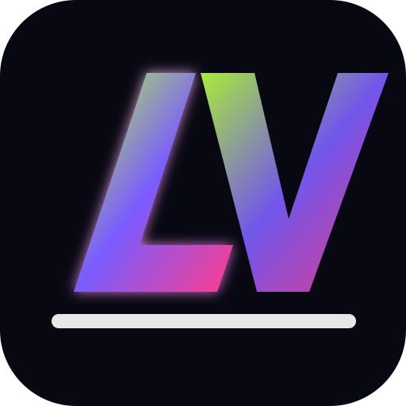

Resumen técnico
- Escenario
- Energía
- Soundcheck

La Variante EPK / Fan HubBanda independiente · Bogotá, Colombia
La Variante mezcla energía en vivo, canciones con narrativa propia y una puesta en escena cercana, potente y adaptable.
Quiénes son
La Variante nace como una banda de canciones con identidad propia, energía escénica y una narrativa visual lista para moverse entre conciertos, festivales, bares, eventos culturales y sesiones íntimas.
La web funciona como carta de presentación pública y como carpeta técnica para contratación. Porque mandar siete PDFs por WhatsApp y rezarle al caos no debería ser el plan de booking, aunque los humanos insistan. 🫠
Enfoque
Una lectura rápida para fans y una explicación clara para programadores.
Integrantes
Formación adaptable para full band, acústico o showcase.
Repertorio
Contratación
Para no vender el mismo show en todos lados como si los espacios no existieran. Qué acto tan revolucionario: adaptar.
Producción
Este mapa es base. Se puede ajustar según venue, número de integrantes y backline disponible.
| Ch | Fuente | Mic / DI | Soporte | Notas |
|---|
EPK
Una sola zona para que el organizador encuentre lo importante sin iniciar una excavación arqueológica en chats.
Booking
Disponible para conciertos, festivales, bares y eventos culturales.
Para cotizar, indicar fecha, ciudad y requerimientos técnicos.
Preguntas rápidas